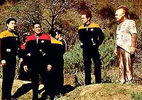
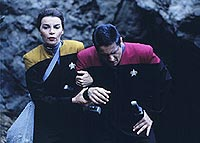
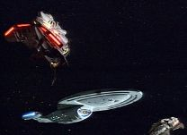
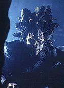
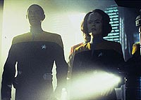
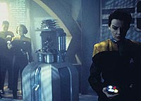

|
MANCHETE
DO EPISDIO
Trama
de suspense expe uma
traidora Cardassiana na Voyager
Episódio
anterior | Prximo
episódio
Sinopse:
Data Estelar: 48658.2.
 Enquanto
faz uma explorao rotineira em um planeta procura de fontes de
alimento, a tripulao detecta uma nave dos Kazons-Nistrim
camuflada em rbita. Os grupos
avanados so então chamados de volta, mas Chakotay no consegue
encontrar a alferes Seska. Algum tempo depois, ele a localiza em uma
caverna nas proximidades, escondida de dois Kazons. Ela afirma que
entrou l para colher cogumelos e acabou se separando dos colegas.
Chakotay ferido em uma troca de tiros com os inimigos, mas Seska
consegue tir-lo de l e retornar Voyager.
Rejeitando as receitas de Neelix,
Seska e outros Maquis invadem as reservas de comida e roubam os
cogumelos que ela encontrou para preparar uma sopa. Ela leva a
refeio para Chakotay, que estava em seus aposentos
recuperando-se dos ferimentos, mas o momento romntico entre os
dois interrompido por um chamado de Neelix, que reporta a
infrao. Irritado, o comandante reprime todos envolvidos,
inclundo a si mesmo. Seska se surpreende com a reação dele e sai
do alojamento, provocando-lhe ao dizer que está de olho no jovem
alferes Kim.
 Trs
dias mais tarde, a USS Voyager recebe um chamado de socorro vindo de
uma nave de guerra Kazon. Quando chegam ao local, descobrem que era
a mesma que detectaram em rbita, mas com apenas um sobrevivente em
meio devastao causada por uma tecnologia da Federao que,
instalada na Ponte, explodiu e vazou radiao. Tuvok chega
concluso que algum a bordo da Voyager deu a tecnologia ao
inimigo.
Desobedecendo ordens, Seska se
transporta para a nave Kazon para recuperar a tecnologia e acaba
ferida. Na Enfermaria, um exame sangneo de rotina revela que a
alferes na verdade uma Cardassiana. Quando acorda, ela explica
que a ausncia de fatores Bajorianos no sangue so resultado de
uma doena que contraiu quando criana.
 Mais
tarde, outra nave Kazon responde ao pedido de ajuda e Janeway
permite que os alienígenas venham a bordo para ver o sobrevivente.
Mas os visitantes matam-no, fazendo com que a agora irritada capitã
os expulse. Determinada a descobrir o que está havendo, ela ignora
a reivindicao dos Kazons sobre a nave avariada e ordena que uma
equipe recupere logo o dispositivo. Seska e Carey, um oficial da
Frota, agora so apontados como os principais suspeitos, por que o
contato com os Kazons foi feito a partir de um posto na Engenharia a
que os dois tinham acesso. B'Elanna recupera a tecnologia e descobre
que se trata de um replicador de alimentos, o qual, quando
instalado, rejeitou a interface com os sistemas Kazons e causou o
desastre.
Chakotay e Tuvok armam uma cilada ara
encontrar o culpado. Finalmente, revela-se que foi Seska a
responsável. Ela se mostra uma Cardassiana cosmeticamente alterada
para parecer uma Bajoriana. Interrogada, diz que fez aquilo pela
tripulao, justificando que a Voyager precisa fazer aliados para
sobreviver e que a troca de tecnologias seria a chave para conseguir
isso. Antes que possa ser presa, ela se transporta para a outra nave
Kazon, que parte em dobra.
Comentrios:
 "State
of Flux" um episódio que traz uma trabalhada trama de
suspense. Temos uma noo clara da situao em que a Voyager se
encontra. Membros da tripulao descem em um planeta classe-M para
coletar vegetais. Isso incomum em Jornada, mas os sistemas
de replicao de alimentos da nave foram comprometidos no
transporte para o quadrante Delta. Alm disso, eles tm de
preservar energia.
Embora Chakotay seja um dos focos da história, mesmo Seska quem
se destaca. Ela marcar o seriado at o terceiro ano. O
primeiro-oficial parece vulnervel e, s vezes, difícil
acreditar que algum com suas caractersticas assuma um comando
entre os maquis. Isso ficou claro no comentrio que fez a Tuvok:
"Você trabalhava para ela (Janeway), Seska trabalhava para
eles (Cardassianos). Algum naquela nave trabalhava para mim?"

interessante o modo como a série desenvolve personagens secundrios.
O tenente Carey e at a própria Seska aparecem desde o incio. A
produção de Voyager percebeu que em uma nave to pequena e
isolada do resto da Frota no poderia haver rotatividade de
tripulantes.
Tambm muito boa a maneira como a capitã Janeway se portou com
os Kazons --tentando ser educada mas, diante de uma sociedade
machista e tecnicamente menos avanada, ameaando usar "a
tecnologia sua disposio" contra o Maje Culluh.
 Entretanto,
vale ressaltar que Seska tinha um bom argumento para ter feito o que
fez. Seguir a Primeira Diretriz ao p da letra pode ser incompatvel
com a missão da capitã, de voltar para casa. Por outro lado, se
ela comear a se esquecer de que so os princípios da Federao
que mantm sua tripulao unida, poder se encontrar perdida.
Por fim, irnico que Chakotay se mostre to apegado s normas.
Quando Seska e outro maquis entram na cozinha da nave a fim de pegar
alguns cogumelos para lhe preparar uma sopa, ele a repreende e
declara que todos, inclisive ele mesmo, estão privados dos privilgios
dos replicadores por dois dias. Tem-se a impresso de que o
comandante nunca abandonou a Frota para juntar-se aos maquis.
Citaes:
Neelix - "Is there really
any harm in letting them keep one little piece of technology?"
("Tem realmente algum mal em deix-los levar uma pequena pea
de tecnologia?")
Seska - "Do you think I gave you my heart to steal your
Maquis secrets?"
("Você acha que eu te dei meu corao para roubar seus
segredos maquis?")
Chakotay - "I was beginning to wonder."
("J comeava a pensar isso")
Seska - "Let me tell you something. Your secrets weren't
good enough."
("Deixa eu te dizer uma coisa. Seus segredos no eram bons o
bastante.")
Trivia:
 Na opinio de Dale Kutzera, colunista da revista Cinefantastique e
especialista em Jornada nas Estrelas, "State of
Flux" coloca Chakotay em primeiro plano em um episódio de Voyager
na hora exata. "Chakotay estava sofrendo do mal de Riker",
diz ele. "Uma terrvel sndrome, que transforma
primeiro-oficiais em pea decorativa."
Na opinio de Dale Kutzera, colunista da revista Cinefantastique e
especialista em Jornada nas Estrelas, "State of
Flux" coloca Chakotay em primeiro plano em um episódio de Voyager
na hora exata. "Chakotay estava sofrendo do mal de Riker",
diz ele. "Uma terrvel sndrome, que transforma
primeiro-oficiais em pea decorativa."
Ficha
técnica:
História de Paul Robert Coyle
Roteiro de Chris Abbott
Dirigido por Robert Scheerer
Exibido em 10/04/1995
Produção: 011
Elenco:
Kate Mulgrew como
Kathryn Janeway
Robert Beltran como Chakotay
Roxann Biggs-Dawson como B'Elanna Torres
Robert Duncan McNeill como Tom Paris
Jennifer Lien como Kes
Ethan Phillips como Neelix
Robert Picardo como Doutor
Tim Russ como Tuvok
Garrett Wang como Harry Kim
Elenco convidado:
Martha Hackett como Seska
Josh Clark como tenente Carey
Anthony De Longis como Culluh
Episódio
anterior | Prximo
episódio
|